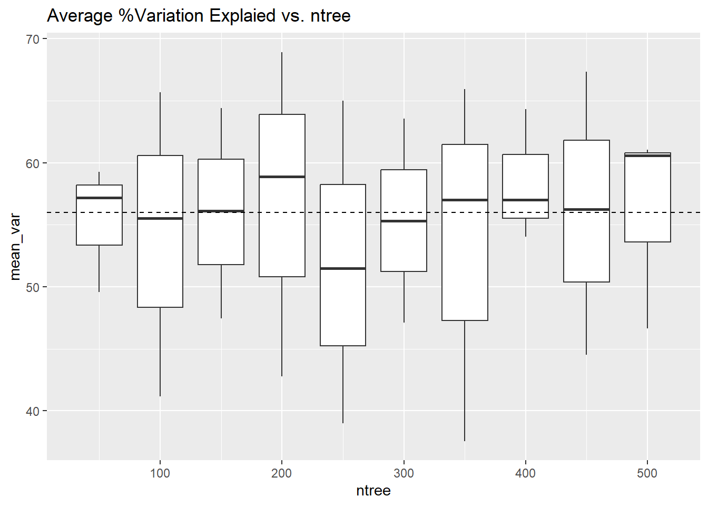
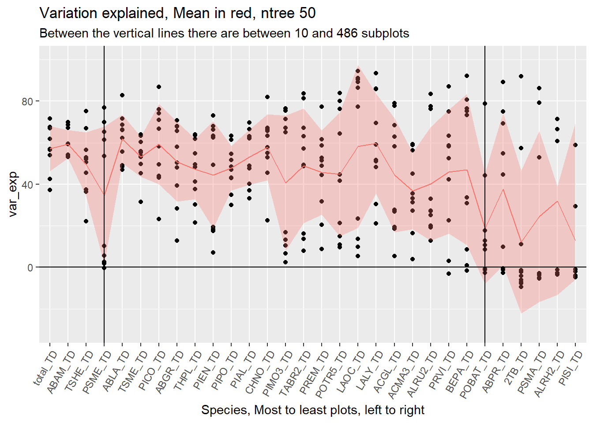
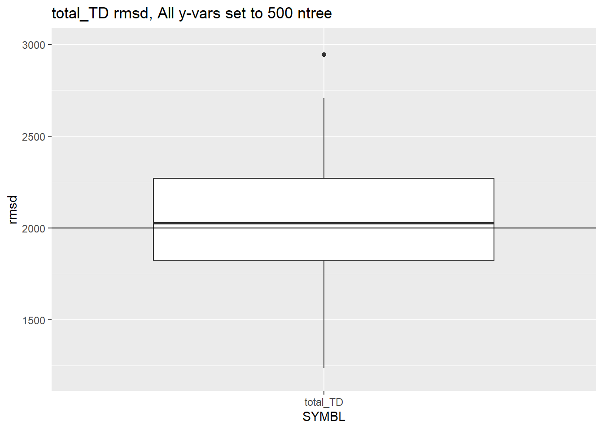

# Split predictors from responsey_resp <- imp_data_nc |>select(STANDPLOT_CN, contains("TD"))x_pred <- imp_data_nc |>select(STANDPLOT_CN, !contains("TD"))# Prepy <- y_resp# save CNsCNs <- imp_data_nc |>select(STANDPLOT_CN)# Remove empty numeric columns y <- y %>%select_if(~!is.numeric(.) ||sum(.) !=0)# X Variablesx <-left_join(CNs, x_pred, join_by(STANDPLOT_CN))x <- x %>%select_if(~!is.numeric(.) ||sum(.) !=0)# Format for yaix <-as.data.frame(x)y <-as.data.frame(y)x <- x |>column_to_rownames("STANDPLOT_CN")y <- y |>column_to_rownames("STANDPLOT_CN")# Put the columns in decreasing order of tpay <- y[, names(sort(colSums(y), decreasing = T))]y <-droplevels(y)x <-droplevels(x)rm(con, t, tdf, i, CNs)
yai functions
yai ntree for loop
Code
yai_loop <-function(grps =2, repeats =3, ntrees =rep((5), 30) ) {# Initialize output database. ntree_error <-tribble(~SYMBL, ~n_plots, ~ntree, ~var_exp, ~rmsd, ~run ) df2 <-NULL ntree_i <- ntreesfor (i in1:grps) {for (k in1:repeats) { ntrees <- ntree_i * i rf <-yai(x = x, y = y, method ="randomForest", k =1, bootstrap = T,rfMode ="regression",ntree = ntrees)# get oobe oobe <-yaiRFsummary(rf)$forestAttributes oobe <- oobe %>%rownames_to_column("SYMBL") %>%select(-c(levels, type, errtag), var_exp = error)# get rmsd rmsd <-rmsd(rf) rmsd <- rmsd %>%rownames_to_column("SYMBL") df2 <- df_nplots error <-left_join(df2, oobe, join_by(SYMBL)) error <-left_join(error, rmsd, join_by(SYMBL)) error$run <- (i *100) + k ntree_error <-add_row(ntree_error, error)# print(str_c("i and k: ", i, " ", k, " ntree: ", ntrees[1])) }}return(ntree_error)}
yai ntree in parallel for loop
Code
yai_parallel <-function(repeats =3, ntrees =rep((5), 30) ) {# Initialize output database. ntree_error <-tribble(~SYMBL, ~n_plots, ~ntree, ~var_exp, ~rmsd, ~run ) df2 <-NULL ntree_i <- ntrees# for (i in 1:grps) {for (k in1:repeats) { ntrees <- ntree_i * i rf <-yai(x = x, y = y, method ="randomForest", k =1, bootstrap = T,rfMode ="regression",ntree = ntrees)# get oobe oobe <-yaiRFsummary(rf)$forestAttributes oobe <- oobe %>%rownames_to_column("SYMBL") %>%select(-c(levels, type, errtag), var_exp = error)# get rmsd rmsd <-rmsd(rf) rmsd <- rmsd %>%rownames_to_column("SYMBL") df2 <- df_nplots error <-left_join(df2, oobe, join_by(SYMBL)) error <-left_join(error, rmsd, join_by(SYMBL)) error$run <- (i *100) + k ntree_error <-add_row(ntree_error, error)# print(str_c("i and k: ", i, " ", k, " ntree: ", ntrees[1])) }# }return(ntree_error)}
Parallel example
yai_parallel with foreach test
Code
# time_in <- Sys.time()#setup parallel backend to use many processorscores=detectCores()cl <-makeCluster(cores[1]-2) #not to overload your computerregisterDoParallel(cl)ntree_error <-foreach(i=1:4, .combine=rbind, .packages =c("tidyverse", "yaImpute")) %dopar% { ntree_error <-yai_parallel(repeats =2, ntrees =rep((2), 30))}#stop clusterstopCluster(cl)# time_out <- Sys.time()# time_par <- time_out - time_in# time_par <- as.duration(time_par)# test <- ntree_error %>% filter(SYMBL == "total_TD") %>% arrange(desc(run))
Running the test set in parallel was finished in better than half the time.
ntree 50-500
run yai for ntrees 50-500 with 10 reps
Code
time_in <-Sys.time()#setup parallel backend to use many processorscores=detectCores()cl <-makeCluster(cores[1]-2) #not to overload your computerregisterDoParallel(cl)ntree_error <-foreach(i=1:10, .combine=rbind, .packages =c("tidyverse", "yaImpute")) %dopar% { ntree_error <-yai_parallel(repeats =10, ntrees =rep((50), 30))}#stop clusterstopCluster(cl)save(ntree_error, file ="./data/ntree_error_sept23_50.500.Rdata")time_out <-Sys.time()time_par <-as.duration(time_out - time_in)test <- ntree_error %>%filter(SYMBL =="total_TD") %>%arrange(desc(run))
error_spp_tree_grps <- ntree_error %>%group_by(SYMBL, ntree) %>%summarise(.groups ="drop",mean_var =mean(var_exp, na.rm = T), sd_var =sd(var_exp, na.rm = T), mean_rmsd =mean(rmsd, na.rm = T),sd_rmsd =sd(rmsd, na.rm = T) ) error_spp_tree_grps %>%ggplot() +aes(x = ntree, y = mean_var, group = ntree) +# geom_smooth()geom_boxplot() +labs(title ="Average %Variation Explaied vs. ntree",# subtitle = "PISI_TD, PSMA_TD, 2TB_TD, & ALRH2_TD often have NAs for variation explained." ) +geom_hline(yintercept =46, linetype =2)
Mean %Variation explained perhaps rises with ntree, but not much. There appears to be no advantage to adjusting ntree across the board.
Plot average rmsd per ntree
Code
error_spp_tree_grps %>%ggplot() +aes(x = ntree, y = mean_rmsd, group = ntree) +# geom_smooth()geom_boxplot() +labs(title ="Average rmsd per ntree",# subtitle = "PISI_TD, PSMA_TD, 2TB_TD, & ALRH2_TD often have NAs for variation explained." ) +ylim(0,1000)
Again, on average rmsd doesn’t appear to get better with more trees.
Ave error top 3
Plot average %variation per ntree, top 3 species
Code
error_spp_tree_grps <- ntree_error %>%filter(SYMBL %in% cols_tds[1:3]) %>%group_by(SYMBL, ntree) %>%summarise(.groups ="drop",mean_var =mean(var_exp, na.rm = T), sd_var =sd(var_exp, na.rm = T), mean_rmsd =mean(rmsd, na.rm = T),sd_rmsd =sd(rmsd, na.rm = T) ) error_spp_tree_grps %>%ggplot() +aes(x = ntree, y = mean_var, group = ntree) +# geom_smooth()geom_boxplot() +labs(title ="Average %Variation Explaied vs. ntree",# subtitle = "PISI_TD, PSMA_TD, 2TB_TD, & ALRH2_TD often have NAs for variation explained." ) +geom_hline(yintercept =56, linetype =2)

Plot average rmsd per ntree
Code
error_spp_tree_grps %>%ggplot() +aes(x = ntree, y = mean_rmsd, group = ntree) +# geom_smooth()geom_boxplot() +labs(title ="Average rmsd per ntree",# subtitle = "PISI_TD, PSMA_TD, 2TB_TD, & ALRH2_TD often have NAs for variation explained." ) +geom_hline(yintercept =1000, linetype =2)
There appears to be no benefit to increasing the number of trees across for all species.
t_rep_error %>%filter(ntree ==50) %>%ggplot() +geom_point(aes(x =reorder(SYMBL, -n_plots), y = var_exp)) +geom_line(aes(x =reorder(SYMBL, -n_plots), y = ave_var, group =1, color ="red")) +geom_ribbon(aes(x = rib, ymin=lower, ymax=upper, fill ="red"), alpha = .3) +# geom_ribbon(aes(x = rib, ymin=lwr2, ymax=upr2, fill = "red"), alpha = .2) +geom_hline(yintercept =0) +guides(x =guide_axis(angle =60), color ="none", fill ="none") +labs(title ="Variation explained, Mean in red, ntree 50",subtitle ="Between the vertical lines there are between 10 and 486 subplots" ) +geom_vline(xintercept ="PSME_TD") +geom_vline(xintercept ="POBAT_TD") +xlab("Species, Most to least plots, left to right") +ylim(-30,100)

Code
t_rep_error %>%filter(ntree ==500) %>%ggplot() +geom_point(aes(x =reorder(SYMBL, -n_plots), y = var_exp)) +geom_line(aes(x =reorder(SYMBL, -n_plots), y = ave_var, group =1, color ="red")) +geom_ribbon(aes(x = rib, ymin=lower, ymax=upper, fill ="red"), alpha = .3) +# geom_ribbon(aes(x = rib, ymin=lwr2, ymax=upr2, fill = "red"), alpha = .2) +geom_hline(yintercept =0) +guides(x =guide_axis(angle =60), color ="none", fill ="none") +labs(title ="Variation explained, Mean in red, ntree 500",subtitle ="Between the vertical lines there are between 10 and 486 subplots" ) +geom_vline(xintercept ="PSME_TD") +geom_vline(xintercept ="POBAT_TD") +xlab("Species, Most to least plots, left to right") +ylim(-30,100)
# Load 50, & 5 from page 9 for comparison.load(file ="./data/t_rep_error.Rdata")error_50_5 <- t_rep_error# Load total_TD set to 500, the rest at 50 or 5. load(file ="./data/ntree_error_sept23_500.50.5_10reps.Rdata")error_500_50_5 <- ntree_error
Average error
Plot average %variation per ntree, 500, 50, 5 + comparisons
Code
### 500, 50 ,5error_500_50_5 %>%filter(!is.na(var_exp)) %>%ggplot() +aes(x =as.character(ntree), y = var_exp, group = ntree) +# geom_smooth()geom_boxplot() +labs(title ="Average %Variation Explaied vs. ntree, 500, 50, 5",# subtitle = "PISI_TD, PSMA_TD, 2TB_TD, & ALRH2_TD often have NAs for variation explained." ) +geom_hline(yintercept =46, linetype =2) +ylim(-160,100)### 50 ,5# Adding group ids for comparison plotg <- error_50_5 %>%filter(ntree ==50) %>%select(SYMBL, ntree) %>%unique()g <- g %>%mutate(g =ifelse(SYMBL =="total_TD", "total", NA), g =ifelse(SYMBL %in% cols_tds[2:23], "50", g),g =ifelse(SYMBL %in% cols_tds[24:30], "5", g))g <-left_join(error_50_5, g, join_by(SYMBL, ntree)) %>%drop_na()g_50_5 <- gg %>%filter(!is.na(var_exp)) %>%ggplot() +aes(x = g, y = var_exp) +# geom_smooth()geom_boxplot() +labs(title ="Average %Variation Explaied vs. ntree, 50 & 5",# subtitle = "PISI_TD, PSMA_TD, 2TB_TD, & ALRH2_TD often have NAs for variation explained." ) +geom_hline(yintercept =46, linetype =2) +ylim(-160,100)### 500g <- error_500 %>%filter(ntree ==500) %>%select(SYMBL, ntree) %>%unique()g <- g %>%mutate(g =ifelse(SYMBL =="total_TD", "total", NA), g =ifelse(SYMBL %in% cols_tds[2:23], "50", g),g =ifelse(SYMBL %in% cols_tds[24:30], "5", g))g <-left_join(error_500, g, join_by(SYMBL, ntree)) %>%drop_na()g_500 <- gg %>%filter(!is.na(var_exp)) %>%ggplot() +aes(x = g, y = var_exp) +# geom_smooth()geom_boxplot() +labs(title ="Average %Variation Explaied vs. ntree, 500",# subtitle = "PISI_TD, PSMA_TD, 2TB_TD, & ALRH2_TD often have NAs for variation explained." ) +geom_hline(yintercept =46, linetype =2) +ylim(-160,100)
There are perhaps slight differences in these 3 approaches, but nothing striking.
Ave RMSD
Plot average rmsd per ntree, 500, 50, 5
Code
error_500_50_5 %>%filter(SYMBL =="total_TD") %>%ggplot(aes(x = SYMBL, y = rmsd)) +geom_boxplot() +ylim(1200, 3000) +labs(title ="total_TD rmsd, total_TD at 500, others at 50, & 5" ) +geom_hline(yintercept =2000)error_50_5 %>%filter(SYMBL =="total_TD") %>%ggplot(aes(x = SYMBL, y = rmsd)) +geom_boxplot() +ylim(1200, 3000) +labs(title ="total_TD rmsd, y-vars set to 50 and 5" ) +geom_hline(yintercept =2000)error_500 %>%filter(SYMBL =="total_TD") %>%ggplot(aes(x = SYMBL, y = rmsd)) +geom_boxplot() +ylim(1200, 3000) +labs(title ="total_TD rmsd, All y-vars set to 500 ntree" ) +geom_hline(yintercept =2000)

There is perhaps a reduction in RMSD when ntree is set to 500 for total and 5 for the last 6 species when compared to either the 10 runs with ntree set at 50 for all but the last 6, or where it was set at 500 for all. On average over the ten runs, the set with 500, 50, and 5 was lowest. The set where everything was set to 500 had the most variation and highest RMSD.
All points in the 500, 50, 5 repetition set. The first is at full scale, the second at fixed y limits.
Plot %Variation by species, 500, 50, 5
Code
t_rep_error %>%# filter(ntree == 50) %>% ggplot() +geom_point(aes(x =reorder(SYMBL, -n_plots), y = var_exp)) +geom_line(aes(x =reorder(SYMBL, -n_plots), y = ave_var, group =1, color ="red")) +geom_ribbon(aes(x = rib, ymin=lower, ymax=upper, fill ="red"), alpha = .3) +geom_hline(yintercept =0) +guides(x =guide_axis(angle =60), color ="none", fill ="none") +labs(title ="Variation explained, Mean in red, ntree 500, 50, & 5",subtitle ="Between the vertical lines there are between 10 and 486 subplots" ) +geom_vline(xintercept ="PSME_TD") +geom_vline(xintercept ="POBAT_TD") +xlab("Species, Most to least plots, left to right")
Code
t_rep_error %>%# filter(ntree == 50) %>% ggplot() +geom_point(aes(x =reorder(SYMBL, -n_plots), y = var_exp)) +geom_line(aes(x =reorder(SYMBL, -n_plots), y = ave_var, group =1, color ="red")) +geom_ribbon(aes(x = rib, ymin=lower, ymax=upper, fill ="red"), alpha = .3) +geom_hline(yintercept =0) +guides(x =guide_axis(angle =60), color ="none", fill ="none") +labs(title ="Variation explained, Mean in red, ntree 500, 50, & 5",subtitle ="Between the vertical lines there are between 10 and 486 subplots" ) +geom_vline(xintercept ="PSME_TD") +geom_vline(xintercept ="POBAT_TD") +xlab("Species, Most to least plots, left to right") +ylim(-10, 100)
RMSD
Plot RMSD by species, 500, 50, 5
Code
t_rep_error %>%# filter(ntree == 50) %>% ggplot() +geom_point(aes(x =reorder(SYMBL, -n_plots), y = rmsd)) +geom_line(aes(x =reorder(SYMBL, -n_plots), y = ave_rmsd, group =1, color ="red")) +# geom_ribbon(aes(x = rib, ymin=lower, ymax=upper, fill = "red"), alpha = .3) +geom_hline(yintercept =0) +guides(x =guide_axis(angle =60), color ="none", fill ="none") +labs(title ="RMSD, Mean in red, ntree 500, 50, & 5",subtitle ="Between the vertical lines there are between 10 and 486 subplots" ) +geom_vline(xintercept ="PSME_TD") +geom_vline(xintercept ="POBAT_TD") +xlab("Species, Most to least plots, left to right")
Plotting total_TD for the best set of rmsd for total_TD
Code
# t_rep_error %>% filter(SYMBL == "total_TD" & rmsd < 1500)t_rep_error %>%filter(run ==105) %>%ggplot() +geom_point(aes(x =reorder(SYMBL, -n_plots), y = rmsd)) +geom_line(aes(x =reorder(SYMBL, -n_plots), y = ave_rmsd, group =1, color ="red")) +# geom_ribbon(aes(x = rib, ymin=lower, ymax=upper, fill = "red"), alpha = .3) +geom_hline(yintercept =0) +guides(x =guide_axis(angle =60), color ="none", fill ="none") +labs(title ="RMSD, Mean in red, ntree 500, 50, & 5",subtitle ="Between the vertical lines there are between 10 and 486 subplots" ) +geom_vline(xintercept ="PSME_TD") +geom_vline(xintercept ="POBAT_TD") +xlab("Species, Most to least plots, left to right")
The run 105 seems to have better than average rmsd.
#………………….
ntree_error_sept19_5.Rdata has up to 500 trees.
ntree_error_sept19_10.Rdata has 1000 trees.
ntree_error_sept20_3_grps_5.Rdata has 5 runs for each ntree, and 3 sets of ntree values: 50, 150, 225.
ntree_error_sept23_50.500.Rdata has from 50-500 ntrees by 50, with 10 repeats for each.
mtry
The number of X-variables picked at random when method is randomForest, default is sqrt(number of X-variables).
I take that to mean the number of columns that get picked.
In the current set of x variables
yai mtry for loop
Code
yai_loop <-function(grps =2, repeats =3, ntrees =rep((5), 30) ) {# Initialize output database. ntree_error <-tribble(~SYMBL, ~n_plots, ~ntree, ~var_exp, ~rmsd, ~run ) df2 <-NULL ntree_i <- ntreesfor (i in1:grps) {for (k in1:repeats) { ntrees <- ntree_i * i rf <-yai(x = x, y = y, method ="randomForest", k =1, bootstrap = T,rfMode ="regression",ntree = ntrees)# get oobe oobe <-yaiRFsummary(rf)$forestAttributes oobe <- oobe %>%rownames_to_column("SYMBL") %>%select(-c(levels, type, errtag), var_exp = error)# get rmsd rmsd <-rmsd(rf) rmsd <- rmsd %>%rownames_to_column("SYMBL") df2 <- df_nplots error <-left_join(df2, oobe, join_by(SYMBL)) error <-left_join(error, rmsd, join_by(SYMBL)) error$run <- (i *100) + k ntree_error <-add_row(ntree_error, error)# print(str_c("i and k: ", i, " ", k, " ntree: ", ntrees[1])) }}return(ntree_error)}
End
Notes:
From stack overflow, how to try doing loops in parallel.
Code
library(foreach)library(doParallel)#setup parallel backend to use many processorscores=detectCores()cl <-makeCluster(cores[1]-1) #not to overload your computerregisterDoParallel(cl)finalMatrix <-foreach(i=1:150000, .combine=cbind) %dopar% { tempMatrix =functionThatDoesSomething() #calling a function#do other things if you want tempMatrix #Equivalent to finalMatrix = cbind(finalMatrix, tempMatrix)}#stop clusterstopCluster(cl)
Notes
The next thing to try in ntree is to try adjusting the ntree values by species.
Try removing total_TD.
Try running with classification, but without bootstrap = T.